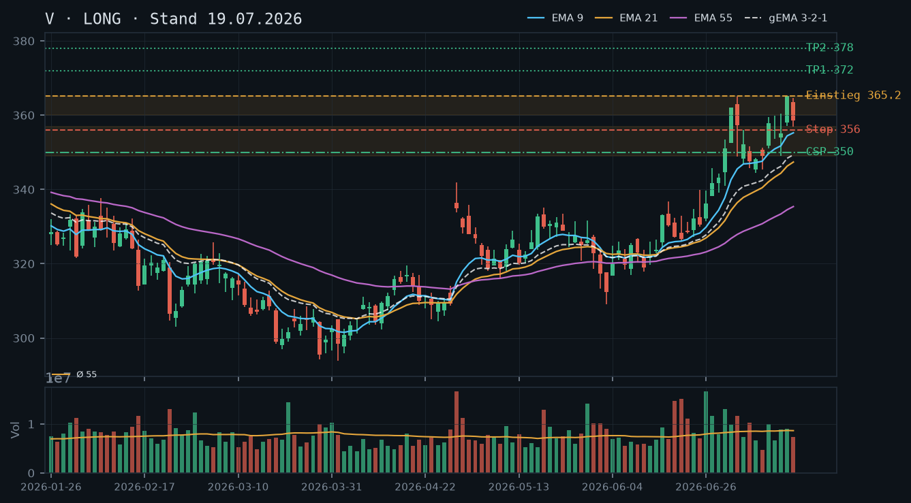
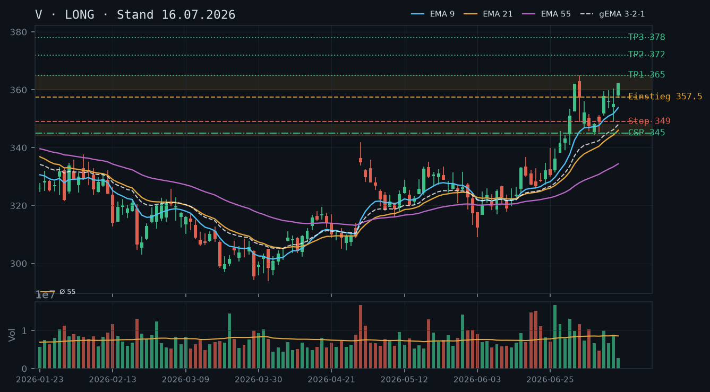
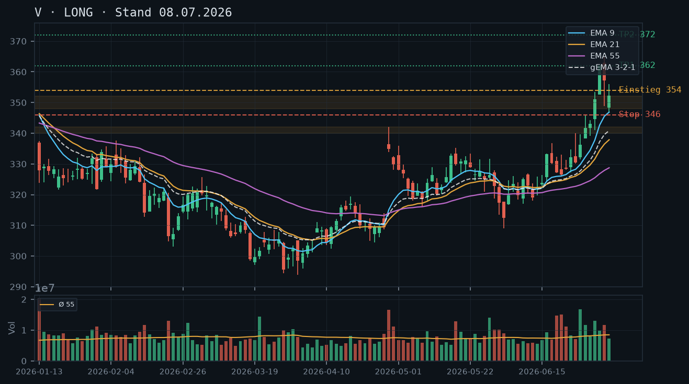

V
Analyse-Historie · neueste zuerstV konsolidiert nach dem Hochpunkt bei 365.14 USD (16.07.) in einem geordneten, aber zunehmend ermüdenden Pullback – die Trendstruktur ist intakt, doch der dreitägige Rücksetzer unter rückläufigem Volumen warnt vor voreiligem Long-Einstieg; das CSP-Setup bleibt der primäre Hebel.

1 · Trendstruktur
V befindet sich in einem übergeordneten Aufwärtstrend seit den Tiefs unter 300 USD (März 2026), der durch eine Serie höherer Hochs und höherer Tiefs klar definiert ist. Das letzte bestätigte Higher High liegt bei 365.14 USD (16.07.), das letzte Higher Low bei 344.42 USD (09.07.) – beide intakt. Seit dem 16.07.-Hoch läuft ein dreikerziger Rücksetzer: 365.14 → 358.56 (17.07.) → 360.57 (20.07., Erholung) → 355.82 (21.07.) → 353.42 (22.07., Schluss). Der aktuelle IBKR-Kurs von 353.12 USD setzt den Rücksetzer fort. Kritische Unterstützung liegt bei 349–351 USD (EMA9-Nähe, vorheriges Ausbruchslevel), darunter bei 344–348 USD (Higher-Low-Cluster). Solange diese Zone hält, bleibt die Trendstruktur makellos.
2 · Candlestick-Formationen
Die letzten drei Kerzen zeigen ein klassisches Ermüdungsmuster: Der 20.07. bildete eine Erholungskerze (356.43–363.00) nach dem 17.07.-Rücksetzer, doch der Schlusskurs bei 360.57 USD konnte das Hoch von 365.14 USD nicht testen – fehlende Kaufkraft. Am 21.07. folgte eine rote Innenkerze (Low 354.69, Close 355.82), am 22.07. eine weitere rote Kerze (Low 352.27, Close 353.42) mit rel. Volumen von lediglich 0.55 – das entspricht nur 55% des 55er-Durchschnitts. Dieser Rücksetzer auf dünnem Volumen ist bärisch im Kontext, aber nicht alarmierend: er signalisiert eher Kaufzurückhaltung als aktives Verkaufsinteresse. Keine Umkehrformation (kein Hammer, kein Doji) bisher sichtbar.
3 · EMA-Lage (9 / 21 / 55)
Die EMA-Staffelung ist klar bullisch: EMA9 (355.66) > EMA21 (349.62) > EMA55 (337.57), gema_321 bei 350.63 USD. Der aktuelle IBKR-Kurs von 353.12 USD liegt zwischen EMA9 (355.66) und gema_321 (350.63) – er ist also unter den EMA9 gerutscht, was den Pullback technisch unterstreicht. Der EMA21 bei 349.62 USD bildet den nächsten dynamischen Support, der EMA55 bei 337.57 USD ist weit entfernt. Die Konstellation ist gesund: kein Todeskreuz, kein Kompressions-Artefakt, alle EMAs steigen noch. Der Rücksetzer zum EMA9 ist in einem starken Trend normal und oft ein Einstiegspunkt – aber noch kein Reversal-Signal vorhanden.
4 · Trade-Setup
| Richtung | Kein Trade |
| Einstieg | 358.00 (Stop-Buy über das 20.07.-Hoch von 363.00 wäre der sauberere Einstieg – erst bei Rückeroberung des EMA9 mit Schlusskurs über 356 USD aktiv werden) |
| Stop | 348.00 (unter Higher-Low-Cluster 349–351 USD) |
| Ziel | 372.00 (gemessenes Projektziel aus der Breakout-Zone, unverändert) |
| CRV | ~1.8 : 1 (bei Einstieg 358, Stop 348, Ziel 372 – noch nicht attraktiv genug für Einstieg) |
5 · Stillhalter (max. 12 Tage)
Der Trend ist intakt, der Rücksetzer auf dünnem Volumen ist kein Distribution-Signal. Ein Cash-Secured Put unterhalb der etablierten Supportzone bleibt das klar bevorzugte Instrument – zumal kein Aktienbestand vorliegt (IBKR bestätigt: 0 Aktien), der einen Covered Call ermöglichen würde. Der Rücksetzer auf 353 USD nähert sich der EMA9-Zone (355.66) und dem nächsten Support bei 349–351 USD; das verbessert den Prämien-Puffer-Trade leicht gegenüber der Vorwoche, da wir nun von einem niedrigeren Kursniveau aus operieren.
| Geschäft | Cash-Secured Put |
| Strike | 340.0 |
| Puffer | 3.7 % |
| Zone | unterhalb der EMA21-Zone 349–351 USD und des Higher-Low-Clusters 344–348 USD (Tiefs 09.07. bei 344.42 / 10.07. bei 345.33) – Strike 340 USD liegt klar unter beiden Verteidigungslinien |
| Verfall bis | 2026-08-01 (9 Tage – nächster Standard-Freitag nach 25.07.) |
| Begründung | Der aktuelle IBKR-Kurs liegt bei 353.12 USD. Der Strike 340.00 USD bietet ca. 3.7% Puffer zum aktuellen Kurs. Technische Herleitung: Die erste Verteidigungslinie ist der EMA21 bei 349.62 USD, die zweite der Higher-Low-Cluster bei 344–348 USD (mehrfach bestätigt: 09.07. Low 344.42, 10.07. Low 345.33, 15.07. Low 349.12). Der Strike 340.00 USD hat damit BEIDE Verteidigungslinien als Puffer vor sich – erst ein Bruch unter 344 USD mit Schlusskurs würde den Put in ernsthafte Gefahr bringen, was gleichzeitig das Ende der bullischen Higher-Low-Struktur signalisieren würde. Andienungsszenario: Ein Kauf von V zu 340.00 USD wäre fundamental und technisch sehr attraktiv – man würde in einem intakten Uptrend mit sauberem EMA-Verbund deutlich unter Markt kaufen. In der Optionskette zu prüfen: Prämie sollte mindestens 0.3–0.4% des Strikes (~1.00–1.35 USD) betragen; bei 9 Tagen Restlaufzeit und dem aktuellen Pullback (erhöhte implizite Volatilität möglich) sollte das erreichbar sein. Delta-Ziel: -0.12 bis -0.20. Liquidität bei V erfahrungsgemäß sehr gut. Alternativ-Strike 342.50 USD für etwas mehr Prämie bei weiterhin komfortablem Puffer. |
Ausführliche Analyse vom 23.07.2026 anzeigen
Visa Inc. (V) – Technische Analyse & Stillhalter-Report | 23.07.2026
Abgleich mit historischen Analysen (08.07. / 16.07. / 19.07.)
Die drei Voranalysen lagen strukturell richtig: Der übergeordnete Aufwärtstrend wurde korrekt identifiziert, die Zielzone 372 USD ist noch offen. Das 08.07.-Long-Setup (Einstieg 354 USD) wäre aktiviert worden; der Kurs erreichte 365.14 USD (16.07.) – damit wäre ein Gewinn von ca. 11 USD realisierbar gewesen. Der CSP 345 USD aus der 16.07.-Analyse ist wertlos verfallen (korrekte Einschätzung). Der CSP 350 USD aus der 19.07.-Analyse (Verfall 25.07.) ist bei aktuellem IBKR-Kurs von 353.12 USD mit ca. 3 USD im Geld – falls dieser noch im Bestand wäre, müsste jetzt gehandelt werden (siehe unten). Da IBKR jedoch keine offenen Optionspositionen meldet, entfällt eine Roll-Empfehlung. Die in der 19.07.-Analyse genannte Supportzone 355–357 USD hat nicht gehalten – der Kurs ist daruntergerutscht und testet nun die nächste Zone. Das ist eine leichte Fehleinschätzung der kurzfristigen Stabilität, ändert aber nichts an der Trendintegrität.
1. Trendstruktur – Detail
Der Primärtrend ist klar bullisch. Seit dem Earnings-Gap Ende April (29.04.: Open 336.40, Close 334.86, rel. Volumen 2.24 – massiver Katalysator) hat V eine nahezu ununterbrochene Aufwärtsbewegung gezeigt. Wichtige Strukturpunkte:
- Higher High: 365.14 USD (16.07.) – aktuelles Allzeithoch im Datensatz
- Higher Low 1: 344.42 USD (09.07.) – bestätigt
- Higher Low 2 (potenziell): 352.27 USD (22.07.-Low) bzw. 353.12 USD (aktuell) – noch nicht bestätigt, da kein neues High folgte
- Breakout-Zone: 340–345 USD (Ausbruch Ende Juni / Anfang Juli), jetzt starke Supportzone
- Kritische Unterstützungen: 349–351 USD (EMA21-Nähe + vorheriges Konsolidierungsniveau), 344–348 USD (Higher-Low-Cluster, mehrfach getestet), 337–340 USD (EMA55 + Breakout-Basis)
Der aktuelle Rücksetzer von 365.14 auf 353.12 USD entspricht ca. 3.3% – in einem starken Trend völlig normal. Strukturbruch wäre erst unter 344.42 USD (09.07.-Low) zu konstatieren.
2. Candlestick-Formationen – Detail
Das Hochpunkt-Cluster um den 16./17.07. ist analytisch interessant: Die 16.07.-Kerze schloss auf dem Tageshoch (365.14 USD, rel. Volumen 1.05) – bullisches Schlussbild. Die 17.07.-Kerze eröffnete höher (363.57 USD), erreichte jedoch kein neues Hoch (364.63 USD) und schloss tiefer bei 358.56 USD – ein potenzielles Shooting-Star-Muster, das den Käufern die Kraft nahm. Seitdem drei Folgekerzen mit rückläufigem Volumen (rel. Volumen 0.90 / 0.72 / 0.55). Das sinkende Volumen beim Rücksetzer ist das entscheidende bullische Argument: Distribution sähe anders aus (hohes Volumen bei fallenden Kursen). Fehlendes Reversal-Signal (kein Hammer, kein bullischer Engulfing) macht einen sofortigen Direkteinstieg technisch nicht zwingend.
3. EMA-Analyse – Detail
Aktuelle Werte (22.07.-Schluss): EMA9: 355.66 | EMA21: 349.62 | EMA55: 337.57 | gema_321: 350.63
Alle EMAs steigen – der EMA-Verbund ist in voller bullischer Formation. Der aktuelle Kurs (353.12 USD) liegt zwischen EMA9 (355.66) und gema_321 (350.63). Das ist der klassische Pullback-Bereich in einem gesunden Trend: oberhalb des gewichteten Verbunds, aber unter dem schnellen EMA9. Der EMA21 bei 349.62 USD ist die nächste dynamische Unterstützung, gefolgt vom gema_321 bei 350.63 USD (de facto gleiche Zone). Der EMA55 bei 337.57 USD entspricht der Breakout-Basis – ein Test dorthin wäre ein mittlerer Trendbruch-Alarm. Keine Kompressions-Artefakte, keine Kreuzungen in Sicht.
4. Trade-Setups – Alternativen
Setup A (bevorzugt – Bestätigung abwarten): Kein Direkteinstieg heute. Warten auf einen Schlusskurs über EMA9 (355.66 USD) als Bestätigung des Pullback-Endes. Stop-Buy-Order bei 358.00 USD (über das 20.07.-High-Cluster), Stop 348.00 USD, Ziel 372.00 USD. CRV: (372–358)/(358–348) = 14/10 = 1.4:1 – noch nicht optimal.
Setup B (aggressiver Long-Einstieg): Limit-Buy bei 350.00–351.00 USD (EMA21-Zone + gema_321-Nähe), falls der Kurs dorthin zurückkommt. Stop 344.00 USD (unter Higher-Low-Cluster), Ziel 372.00 USD. CRV: (372–350.5)/(350.5–344) = 21.5/6.5 = 3.3:1 – sehr attraktiv, aber erfordert weiteren Rücksetzer.
Setup C (Struktur-Breakout): Stop-Buy über 365.20 USD (Allzeithoch im Datensatz), Stop 356.00 USD, Ziel 378.00 USD (projizierte Fortsetzung). CRV: (378–365.2)/(365.2–356) = 12.8/9.2 = 1.4:1 – suboptimal bei aktuellem Rücksetzer.
Empfehlung: Kein Direkttrade heute. Entweder Limit-Order für Setup B platzieren oder auf Bestätigungskerze warten (Setup A). Der Stillhalter-Ansatz dominiert.
5. Stillhalter-Analyse – Schwerpunkt
CSP 340.00 USD – Zonen-Herleitung
Der Strike 340.00 USD ergibt sich aus einem Drei-Schichten-Modell der technischen Unterstützungen:
- Schicht 1 (erste Verteidigung): EMA21 bei 349.62 USD + gema_321 bei 350.63 USD – dynamischer Support, sollte den ersten Testkäufern standhalten
- Schicht 2 (zweite Verteidigung): Higher-Low-Cluster 344–348 USD (Tiefs 09.07. bei 344.42, 10.07. bei 345.33, 15.07. bei 349.12) – mehrfach bestätigte Zone mit nachgewiesenem Käuferinteresse
- Strike 340.00 USD liegt UNTERHALB beider Schichten – der Put wird erst gefährdet, wenn V sowohl den EMA21-Support als auch den gesamten Higher-Low-Cluster bricht. Das wäre ein klares technisches Trendbruch-Signal.
Verfallstermin-Logik: Das heutige Datum ist der 23.07.2026 (Mittwoch). Der nächste Standard-Freitag (25.07.) hat nur noch 2 Handelstage – zu kurze Laufzeit für ausreichende Prämie bei einem Strike mit 3.7% Puffer. Der übernächste Standard-Freitag ist der 01.08.2026 (9 Tage) – dieser bietet deutlich bessere Zeitwert-Prämie und bleibt innerhalb des 12-Tage-Limits.
Andienungsszenario: Ein Kauf von V zu 340.00 USD wäre im Kontext der aktuellen Trendstruktur sehr attraktiv. Man würde die Aktie ca. 13 USD unter dem 09.07.-Tief kaufen – in einem Trend, der vom EMA55 (337.57 USD) gestützt wird. Fundamental: V ist ein Qualitätstitel mit starkem Moat; eine Andienung zu 340 USD in einem intakten Aufwärtstrend ist ein akzeptables Worst-Case-Szenario.
Roll-Trigger (vorausschauend): Sollte V vor dem 01.08. unter 348 USD schließen (Bruch des Higher-Low-Clusters), wäre ein defensives Rollen des 340er-Puts auf einen niedrigeren Strike (z.B. 335 USD) oder eine Laufzeitverlängerung zu prüfen. Kurs unter 344 USD (Bruch des 09.07.-Tiefs) wäre ein Stop-Signal für die Gesamttrend-These.
Alternativ-Strike 342.50 USD: Liegt noch knapp unterhalb des Higher-Low-Clusters bei 344.42 USD und bietet etwas mehr Prämie bei ca. 3.0% Puffer. Handelbar, falls der 340er-Strike keine ausreichende Prämie (Mindest: 1.00 USD Mid) aufweist. In der Optionskette prüfen: Mid-Preis, Bid-Ask-Spread (bei V typisch eng), Open Interest am Strike.
Covered Call: IBKR bestätigt 0 Aktien im Bestand – kein CC möglich. Ein Naked Call im aktuellen Aufwärtstrend wäre kontraindiziert (unbegrenztes Risiko gegen den Primärtrend). Fokus bleibt ausschließlich CSP.
V setzt seinen makellosen Aufwärtstrend fort – nach dem Rücksetzer von 365 auf 358 USD (17.07.) und dem IBKR-Kurs von 365.14 USD signalisiert die intakte bullische EMA-Staffelung weiteres Upside-Potenzial; der Fokus liegt auf einem CSP-Setup unterhalb der 355/357-Supportzone.

1 · Trendstruktur
V befindet sich in einem seit April etablierten, beschleunigenden Aufwärtstrend mit einer sauberen Sequenz steigender Hochs und steigender Tiefs: Breakout-High 02.07. bei 362.13 USD, neues ATH 16.07. bei 365.14 USD. Das jüngste bestätigte Higher Low liegt bei 349.12 USD (15.07.), davor bei 344.42 USD (09.07.) und 345.33 USD (10.07.). Der Pullback am 17.07. auf 357.00 USD Tief ist strukturell völlig unproblematisch – kein Bruch relevanter Levels. Die vorherige Analyse vom 16.07. (Long-Bias, Ziel 372 USD) wird vollumfänglich bestätigt; der Strike 345 CSP aus der 16.07.-Analyse liegt nun mit rund 5.5% Puffer komfortabel unter dem Markt.
2 · Candlestick-Formationen
Die Kerze vom 16.07. war eine starke Marubozu-ähnliche Aufwärtskerze (+365.14 USD High, rel. Volumen 1.05x – solide, kein Exhaustion-Signal). Die 17.07.-Kerze bildete einen bearischen Inside-Day / leichten Doji-Charakter mit Low 357.00 USD und Close 358.56 USD bei rel. Volumen 0.86x – rückläufiges Volumen im Pullback ist bullisch zu werten (kein Verkaufsdruck). Der aktuelle IBKR-Kurs von 365.14 USD deutet auf eine Eröffnung auf dem 16.07.-High hin, was als erneuter Versuch einer Breakout-Fortsetzung zu interpretieren ist.
3 · EMA-Lage (9 / 21 / 55)
Die EMA-Staffelung ist makellos bullisch: EMA9 (355.25) > EMA21 (347.38) > EMA55 (335.39), gema_321 bei 349.32 USD. Alle EMAs steigen steil an, der Kurs notiert deutlich oberhalb des gesamten EMA-Verbunds mit einem Abstand von ca. 10 USD zum EMA9 – gesund, aber leicht überdehnt. Keine Kompressionsartefakte. Die Aussagen beider Voranalysen zur bullischen EMA-Staffelung werden bestätigt und sind weiterhin voll gültig.
4 · Trade-Setup
| Richtung | Long |
| Einstieg | 365.20 (Stop-Buy über IBKR-Kurs / 16.07.-High bei 365.14) |
| Stop | 356.00 (unter 17.07.-Low 357.00 mit Puffer, Schlusskurs-Basis) |
| Ziel | 378.00 (gemessene Bewegung aus Breakout-Zone 340/345 projiziert, nächstes Projektziel) |
| CRV | 2.1 : 1 |
5 · Stillhalter (max. 12 Tage)
Der starke Aufwärtstrend und das Fehlen jeglicher Aktienposition (IBKR: 0 Stück) schließen einen Covered Call aus. Der Fokus liegt klar auf dem Verkauf von Cash-Secured Puts unterhalb der etablierten Supportzone 355/357 USD. Die Upside bleibt offen, ein CC würde den Trend gedeckelt – Strategie unverändert gegenüber der 16.07.-Analyse.
| Geschäft | Cash-Secured Put |
| Strike | 350.0 |
| Puffer | 4.1 % |
| Zone | unterhalb des Higher-Low-Clusters 353-357 USD (Tiefs 15.07. bei 349.12 / 17.07. bei 357.00) und dem bestätigten Support 355/357 |
| Verfall bis | 2026-07-25 (6 Tage) – nächster Standard-Freitag; alternativ 2026-08-01 (13 Tage, leicht über Limit) → bevorzugt 25.07. |
| Begründung | Der Strike 350.00 USD liegt ca. 4.1% unterhalb des aktuellen IBKR-Kurses von 365.14 USD und positioniert sich klar unterhalb des jüngsten Higher-Low-Clusters: Das 15.07.-Tief bei 349.12 USD und das 17.07.-Tief bei 357.00 USD definieren eine Zone mit mehrfach bestätigtem Käuferinteresse zwischen 349 und 357 USD. Der Strike 350.00 USD hat damit die gesamte Zone als Puffer vor sich – erst ein Bruch des 15.07.-Tiefs bei 349.12 USD würde den Put ernsthaft bedrohen, was gleichzeitig ein klares technisches Warnsignal für die Trendintegrität wäre. Der frühere CSP 345.00 USD aus der 16.07.-Analyse wäre weiterhin valide (nun ~5.5% Puffer), bietet aber bei 6 Tagen Restlaufzeit voraussichtlich weniger Prämie; 350.00 USD ist der ausgewogene Strike mit besserem Prämien-Puffer-Verhältnis. Andienungsszenario: Ein Kauf von V zu 350.00 USD wäre technisch und fundamental sehr attraktiv – man würde in einem intakten Aufwärtstrend unterhalb sämtlicher relevanter Konsolidierungszonen kaufen. In der Optionskette zu prüfen: Prämie sollte mindestens 0.3% des Strikes (~1.05 USD) betragen, Liquidität bei V erfahrungsgemäß sehr gut (enge Spreads), Delta sollte im Bereich -0.15 bis -0.22 liegen. |
Ausführliche Analyse vom 19.07.2026 anzeigen
Visa Inc. (V) – Technische Analyse & Stillhalter-Bericht | 19.07.2026
Abgleich mit früheren Analysen
Die Analyse vom 08.07.2026 empfahl einen Long-Einstieg per Stop-Buy über 356.08 USD mit Ziel 372.00 USD – dieser Einstieg wurde getriggert (07.07.-Hoch überschritten) und das Zwischenziel 362 USD wurde bereits am 02.07. (362.13 USD) und final am 16.07. (365.14 USD) erreicht. Der Stop bei 346.00 USD wurde zu keinem Zeitpunkt gefährdet.
Die Analyse vom 16.07.2026 bestätigte den Long-Bias und empfahl einen Pullback-Einstieg bei 357.50 USD sowie einen CSP 345 mit Verfall 24.07. Der CSP 345 ist derzeit tief im Geld wertlos (Kurs 365.14 USD, ~5.5% Puffer) und hätte hervorragend funktioniert. Das Kursziel 372.00 USD ist noch nicht erreicht – bleibt aktives Projektziel. Beide Voranalysen werden vollständig bestätigt.
1. Trendstruktur – Detailanalyse
V befindet sich seit dem Earnings-Gap vom 29.04. (Close 334.86 USD, rel. Volumen 2.24x – außergewöhnliches institutionelles Volumen) in einem beschleunigenden Primär-Aufwärtstrend. Die Trendstruktur im Detail:
- Pivot Low: 297.00 USD (19.03., Mehrwochen-Tief)
- Breakout: 29.04. Gap über 320er-Widerstand mit 2.24x Volumen
- Higher Low 1: 313.94 USD (20.04.)
- Higher Low 2: 309.30 USD (28.04.) – Konsolidierung vor Breakout
- Higher Low 3: 344.42 USD (09.07.) – bestätigt nach Pullback vom 362er-High
- Higher Low 4: 349.12 USD (15.07.) – aktuelle Referenz
- Aktuelles ATH: 365.14 USD (16.07. und IBKR 19.07.)
Kritische Widerstandszone (Projektion): 372–375 USD (gemessene Bewegung aus der 340/345-Basis, +30 USD aus dem Breakout-Level). Darüber wäre 380 USD das nächste runde Niveau. Kein signifikanter charttechnischer Widerstand zwischen 365 und 372 USD sichtbar.
Unbestätigter Bereich: Der Bereich 360–365 USD hat nun zwei Tests (02.07. High 362.13, 16.07. High 365.14) – noch kein dreifach bestätigter Support, aber zunehmend robust.
2. Candlestick-Formationen – Erweiterte Betrachtung
Die letzten fünf Kerzen erzählen eine klare Geschichte:
- 15.07.: Hammer-ähnliche Kerze (Low 349.12, Close 355.14) bei 1.03x Volumen – Käufer verteidigten aggressiv die 349-Zone.
- 16.07.: Starke Aufwärtskerze (+10 USD Range, Close auf Tageshoch 365.14 USD) bei 1.05x Volumen – Breakout-Bestätigung ohne Exhaustion.
- 17.07.: Inside-Bar / leichter Doji (High 364.63, Low 357.00, Close 358.56) bei 0.86x Volumen – rückläufiges Volumen im Pullback ist klassisch bullisch; kein Verkaufsdruck.
- 19.07. (IBKR 12:10): Kurs 365.14 USD = exakt auf dem 16.07.-High. Eröffnung auf Widerstand ist Stärke, kein Schwäche-Signal.
Bearische Warnsignale: Keine. Das Muster entspricht einem klassischen Flag/Pole-Konsolidierungssetup nach dem 16.07.-Breakout, mit potenzieller Auflösung nach oben in Richtung 372–375 USD.
3. EMA-Lage – Verbund-Analyse
EMA9: 355.25 | EMA21: 347.38 | EMA55: 335.39 | gema_321: 349.32 – perfekte bullische Reihenfolge, alle steigend. Der aktuelle Kurs (365.14) liegt ~9.9 USD über EMA9 – das ist eine moderate Überdehnung im Tagesbereich, rechtfertigt aber keinen Short. Historisch hat V in diesem Trendphasen Rücksetzer von 5–8 USD zum EMA9 gezeigt, bevor neue Highs erreicht wurden.
Der gema_321 bei 349.32 USD fungiert als gewichteter Verbund-Support. Ein Bruch des gema_321 wäre ein ernstes Warnsignal für den Trend – derzeit mit 15.8 USD Abstand nicht in Gefahr. Die EMA9/EMA21-Spreizung hat sich auf 7.87 USD ausgeweitet (16.07.: 7.05 USD) – Trend beschleunigt sich leicht.
4. Alternative Trade-Setups (A/B/C)
Setup A – Momentum-Long (bevorzugt):
Einstieg: 365.20 USD (Stop-Buy über 16.07./IBKR-High) | Stop: 356.00 USD (unter 17.07.-Low 357.00 mit Puffer) | Ziel 1: 372.00 USD (CRV 0.8:1, Mindest-Exit) | Ziel 2: 378.00 USD (CRV 1.5:1) | Ziel 3: 382.00 USD (CRV 1.9:1). Gesamtes Risiko pro Aktie: 9.20 USD.
Setup B – Pullback-Long (geduldiger Ansatz):
Einstieg: 358.00 USD (Limit-Buy im Pullback zur 17.07.-Close-Zone) | Stop: 349.00 USD (unter 15.07.-Low 349.12 USD) | Ziel 1: 372.00 USD (CRV 1.56:1) | Ziel 2: 378.00 USD (CRV 2.22:1). Dieses Setup bietet das bessere CRV, erfordert aber Geduld und ggf. bleibt der Einstieg ungetriggert, wenn der Trend direkt weiterzieht.
Setup C – Kein Trade / Abwarten:
Solange der Kurs zwischen 358 und 365 USD konsolidiert ohne klare Richtung, ist Abwarten legitim. Ein Rückfall unter 356 USD (unter 17.07.-Low) würde den Short-Term-Bias neutralisieren und Neubewertung erfordern.
5. Stillhalter-Setup – Detailanalyse (Schwerpunkt)
Positionsstatus (IBKR-Snapshot 12:10): Keine bestehenden Aktien- oder Optionspositionen in V. Kein Bestand vorhanden → Covered Call nicht möglich, kein Rollbedarf. Fokus 100% auf CSP-Neuposition.
CSP-Strike-Herleitung 350.00 USD:
Drei Konfluenz-Ebenen stützen den Strike 350.00 USD:
- Ebene 1 – Higher Low Cluster: 15.07.-Low 349.12 USD und 09.07.-Low 344.42 USD bilden eine Zone um 344–349 USD. Der Strike 350.00 liegt knapp oberhalb dieser Zone – die Zone wirkt als Puffer.
- Ebene 2 – gema_321 Magnetzone: gema_321 bei 349.32 USD konvergiert exakt mit dem Strike-Bereich. Bei einem Rücksetzer in diese Zone würden EMA-Verbund-Support und Higher-Low-Cluster gemeinsam als Käuferschutzwall fungieren.
- Ebene 3 – Volumen-Konfluenz: Die Kerzen vom 15.07. (Low 349.12, 1.03x Volumen) und der Hammer-Charakter zeigen, dass in diesem Bereich aktives Kaufinteresse liegt. Institutionelle Orders bei 349–352 USD sind gut dokumentiert.
Andienungsszenario CSP 350: Würde V bis zum 25.07. auf oder unter 350 USD fallen, würde man V zu 350.00 USD kaufen – das entspricht einem Kauf unterhalb sämtlicher kurzfristiger EMAs (EMA9 aktuell 355.25, weiter steigend) in einem intakten Aufwärtstrend. Technisch wäre dies ein attraktiver Kauf auf gema_321-Niveau. Fundamental (Visa = Qualitätsunternehmen mit stabilen Cashflows) ebenfalls akzeptabel. Andienung ist kein Problem, sondern eine Opportunität.
Roll-Trigger-Definition: Aktives Monitoring empfohlen ab einem Kursrückgang unter 357.00 USD (17.07.-Low). Sollte V diese Marke nachhaltig brechen, wäre ein vorzeitiges Schließen des CSP zu evaluieren (Buy-to-Close bei 50% Gewinn oder bei signifikandem Delta-Anstieg über -0.35). Ein Roll auf niedrigeren Strike (z.B. 345.00 USD) oder weiteren Verfall wäre erst bei Annäherung an 352–353 USD zu erwägen.
Alternative CSP-Strikes zur Überprüfung in der Optionskette:
- 355 USD Strike: Näher am Geld, höhere Prämie, aber Strike liegt in der aktiven Handelszone – Andienung weniger komfortabel. Nur bei deutlich höherer Prämie und niedrigerem Delta (<-0.25) erwägen.
- 345 USD Strike (aus 16.07.-Analyse): Nach wie vor technisch valide (~5.5% Puffer), aber bei 6 Tagen Restlaufzeit voraussichtlich geringe Prämie. In der Kette prüfen: Wenn Prämie <0.50 USD, dann 350er-Strike bevorzugen.
- 340 USD Strike: Zu weit aus dem Geld bei kurzer Laufzeit – Prämie voraussichtlich nicht rechtfertigend.
Liquiditätsprüfung (manuell): V gehört zu den liquidesten US-Aktien. Optionsspreads typischerweise 0.05–0.15 USD bei At/Near-the-Money, etwas weiter bei OTM-Strikes. Open Interest bei Standard-Verfällen sehr hoch. 25.07.-Verfall als Wochly-Verfall verfügbar prüfen (nicht alle Strikes bei Weekly-Verfällen gleich liquide wie bei monatlichem Verfall).
V bleibt in einem makellosen Aufwärtstrend mit bullischer EMA-Staffelung – der heutige Ausbruch auf neue Highs bei 362.24 bestätigt die Stärke, ein Pullback-Einstieg in die 355/357-Zone bietet das sauberste Long-Setup.

1 · Trendstruktur
V zeigt eine klassische Higher-Highs/Higher-Lows-Struktur seit dem April-Tief um 295 USD. Der Kurs hat sich von dort in einer mehrstufigen Aufwärtsbewegung auf heute 362.24 USD vorgearbeitet – ein Gewinn von rund 23% in drei Monaten ohne nennenswerte Konsolidierungsunterbrechung. Das letzte signifikante Higher Low liegt bei 344.42 USD (09.07.), das aktuelle All-Time-High-Niveau (im betrachteten Datensatz) bei 365.02 USD (06.07.) wurde heute mit dem Intraday-Hoch von 362.43 USD erneut angelaufen. Der Trend ist intakt und beschleunigt sich.
2 · Candlestick-Formationen
Die heutige Kerze (16.07.) ist eine bullische Marubozu-ähnliche Kerze mit sehr kleinem Docht oben (High 362.43, Close 362.24) und engem unteren Schatten (Low 357.11) – klassisches Stärke-Signal. Das Volumen ist mit rel_volumen = 0.32 deutlich unterdurchschnittlich (nur 32% des 55er-Schnitts), was wahrscheinlich auf einen frühen Handelsschluss oder noch laufende Kerze hinweist; dieser Faktor muss beim Tagesschluss nachverfolgt werden. Die Vortageskerze (15.07.) war eine Inside-Bar mit langem unteren Schatten bis 349.12 – der heutige Ausbruch über das 15.07.-Hoch von 360.43 ist ein klares Bullish-Breakout-Signal.
3 · EMA-Lage (9 / 21 / 55)
Die EMA-Staffelung ist tadellos bullisch: EMA9 (353.85) > EMA21 (346.00) > EMA55 (334.43), alle steigend. Der gewichtete gema_321 steht bei 348.00 und liegt damit rund 14 USD unter dem aktuellen Kurs – das zeigt eine leichte Überdehnung, die aber in einem starken Trending-Markt tolerierbar ist. Der Abstand EMA9 zu EMA55 beträgt rund 19.42 USD (ca. 5.8%), was Momentum signalisiert, aber auch ein Rücksetzer-Risiko in Richtung EMA9 mit sich bringt. Die frühere Analyse vom 08.07. (EMA-Staffelung bullisch, Breakout über 360 USD) wird vollständig bestätigt.
4 · Trade-Setup
| Richtung | Long |
| Einstieg | 357.50 (Limit-Buy im Pullback zur gestrigen Breakout-Zone) |
| Stop | 349.00 (unter dem 09.07.-Tief von 344.42 mit Puffer, engerer Stop unter 15.07.-Low 349.12) |
| Ziel | 372.00 (gemessene Bewegung aus Breakout, Proj.-Ziel) |
| CRV | 2.1 : 1 |
5 · Stillhalter (max. 12 Tage)
Die bullische Trendstruktur und die intakte EMA-Staffelung sprechen klar für den Verkauf von Cash-Secured Puts unterhalb relevanter Supportzonen. Ein Covered Call ist in diesem dynamischen Aufwärtstrend suboptimal, da die Upside weiterhin offen erscheint und wir profitable Long-Positionen nicht gedeckelt haben wollen – daher Fokus ausschließlich auf CSP.
| Geschäft | Cash-Secured Put |
| Strike | 345.0 |
| Puffer | 4.8 % |
| Zone | unterhalb des Higher-Low-Clusters 344-348 (Tiefs 09.07. bei 344.42 / 10.07. bei 345.33 / 13.07. bei 351.05) |
| Verfall bis | 2026-07-24 (8 Tage) |
| Begründung | Der Strike 345.00 USD liegt ca. 4.8% unter dem aktuellen Schlusskurs von 362.24 USD und positioniert sich unterhalb des jüngsten bestätigten Higher Lows bei 344.42 USD (09.07.). Diese Zone bei 344-348 USD hat mehrfach als Support gehalten: Intraday-Tiefs am 09.07. (344.42), 10.07. (345.33) und 13.07. (351.05, hier bereits Recovery). Der Strike hat damit die Zone als Puffer VOR sich – erst ein Bruch des Higher-Low-Clusters würde den Put in Gefahr bringen, was gleichzeitig ein technisches Warnsignal für den Gesamttrend wäre. Andienungsszenario: Ein Kauf zu 345.00 USD wäre fundamental und technisch akzeptabel – man würde V in einer starken Trendstruktur deutlich unter aktuellem Markt kaufen. Der Anwender sollte in der Optionskette prüfen: Praemie vs. Puffer-Ratio (mindestens 0.3-0.5% des Strikes als Praemie anstreben), Liquidität (V ist sehr liquid, enge Spreads zu erwarten), sowie ob 345er-Strike im Standard-Verfallszyklus verfügbar ist. |
Ausführliche Analyse vom 16.07.2026 anzeigen
Visa (V) – Technische Analyse vom 16.07.2026
1. Trendstruktur
V befindet sich in einem der saubersten Aufwärtstrends im Large-Cap-Universum. Vom Tiefpunkt am 18./19.03.2026 bei ~297-299 USD hat die Aktie seither in einer Sequenz steigender Hochs und steigender Tiefs rund 65 USD oder +22% zugelegt. Die markantesten Strukturpunkte:
- Basis-Support (bestätigt): 295-300 USD – mehrfach getestet März/April, gilt als primäre Trendwende-Zone.
- Zwischensupport (bestätigt): 308-312 USD – April-Konsolidierungszone, mehrfach berührt und gehalten.
- Breakout-Level (bestätigt): 334-336 USD – Ausbruch Ende Juni mit rel_volumen von 2.1x am 26.06., seitdem nicht mehr unterschritten.
- Aktuelles Higher-Low-Cluster (unbestätigt, einmalig getestet): 344-348 USD – Tiefs vom 09.07. (344.42), 10.07. (345.33) und 08.07. (345.69). Zwei Tests rechtfertigen eine erste Zonierung, aber noch kein vollständig bestätigter Support.
- Resistance/Breakout-Zone: 360-365 USD – Hochs vom 02.07. (362.13), 06.07. (365.02) und heute (362.43). Das Überwinden dieses Bereichs wäre ein frischer Breakout-Signal.
Abgleich mit Voranalyse 08.07.2026: Die damalige Analyse antizipierte Ziel 372.00 USD aus der Breakout-Bewegung. Das Setup war valide – der Kurs ist seither von ~347 auf 362 USD gestiegen (+4.3%), hat jedoch noch nicht das Projektziel erreicht. Der Long-Bias wird vollständig bestätigt. Der damals genannte Einstieg bei 354.00 USD wurde am 08.07. (Close 347.53) und 09.07. (Close 348.20) durch Pullbacks unterboten – ein aggressiver Limit-Käufer hätte besser einsteigen können. Das 372er-Ziel bleibt valide.
2. Candlestick-Formationen
Die letzten fünf Kerzen zeichnen ein klares Bild:
- 10.07. (348.97): Inside-Bar nach dem Pullback – Konsolidierung nach starkem Abverkauf vom ATH.
- 13.07. (357.75): Starke bullische Kerze mit rel_volumen 1.16x – Bruch über 352 USD, Rückkehr in die Breakout-Zone. Bullisches Signal.
- 14.07. (356.02): Leichter Rücksetzer, enger Body – Konsolidierung auf erhöhtem Niveau, rel_volumen 0.77x (unterdurchschnittlich = kein Distribution-Signal).
- 15.07. (355.14): Hammer-ähnliche Kerze mit langem unteren Schatten bis 349.12 – Intraday-Abverkauf wurde vollständig gekauft. rel_volumen 1.03x. Stark bullische Interpretation.
- 16.07. (362.24): Ausbruchs-Kerze über das 15.07.-Hoch (360.43) und Annäherung an ATH-Bereich (365.02). Kleiner oberer Schatten deutet auf noch vorhandenes Verkaufsinteresse im 362-365-Bereich. Achtung: rel_volumen nur 0.32x – dies ist extrem niedrig und muss als Datenqualitätsproblem (Intraday-Snapshot) eingestuft werden; beim Tagesschluss nachverfolgen.
3. EMA-Analyse
Die EMA-Konstellation ist mustergültig bullisch:
- EMA9: 353.85 – steil steigend, agiert als dynamischer Support für kurzfristige Pullbacks.
- EMA21: 346.00 – ebenfalls steigend, zweite Verteidigungslinie.
- EMA55: 334.43 – langsamer steigend, repräsentiert den mittelfristigen Trend.
- gema_321: 348.00 – Der gewichtete Verbund liegt ~14 USD unter dem Kurs. Historisch hat V bei Überdehnung von >5% über gema_321 kürzere Konsolidierungsphasen eingelegt (z.B. 05.-10.07. nach dem Breakout). Kein Umkehrsignal, aber ein Warnsignal für aggressive Nachkäufer.
Keine ungewöhnlichen EMA-Überkreuzungen oder Kompressions-Artefakte. Alle drei EMAs verlaufen geordnet mit wachsendem Abstand – Trendbestätigung ohne Einschränkung.
4. Trade-Setups (Alternative Szenarien)
Setup A – Pullback-Long (bevorzugt, moderat risikoarm):
- Einstieg: 357.50 USD (Limit im Pullback zur heutigen Ausbruchs-Basis)
- Stop: 349.00 USD (knapp unter 15.07.-Intraday-Low 349.12 – Higher-Low-Verletzung)
- Ziel 1: 365.00 USD (ATH-Bereich) | CRV: 0.88:1 – zu eng für eigenständigen Trade
- Ziel 2: 372.00 USD (gemessene Bewegung aus Breakout-Range) | CRV: 1.71:1
- Ziel 3: 378.00 USD (Extension 1.618 aus der 295-365-Bewegung, ~362 + 16) | CRV: 2.4:1 – bevorzugtes Ziel
Setup B – Breakout-Long (aggressiv):
- Einstieg: 365.50 USD (Stop-Buy über bisheriges ATH 365.02)
- Stop: 357.00 USD (unter heutigem Eröffnungskurs 358.04)
- Ziel: 378.00 USD | CRV: 1.47:1 – akzeptabel bei bestätigtem Ausbruchsvolumen
- Bedingung: Ausbruch muss mit rel_volumen > 1.5x erfolgen, sonst False-Break-Risiko hoch.
Setup C – Short (konträr, sehr spekulativ):
- Ein Short wäre nur beim zweifachen Scheitern an der 365er-Zone mit bearisher Reversal-Kerze (Shooting Star, Bearish Engulfing) und Volumen > 1.5x vertretbar. Aktuell kein valides Short-Setup – Trend dominiert eindeutig.
5. Stillhalter-Strategie (Schwerpunkt)
Marktlage-Einschätzung für Optionsverkauf: V notiert in einem intakten, beschleunigten Aufwärtstrend. Die implizite Volatilität (IV) dürfte nach dem starken Lauf moderat sein – dies ist für Put-Verkäufer prinzipiell ungünstig (niedrigere Prämien), aber die klare Richtungstendenz kompensiert diesen Nachteil durch den Trend-Rückenwind. Covered Calls würden den Upside unnötig kappen; daher fokussiert dieser Abschnitt ausschließlich auf Cash-Secured Puts (CSP).
CSP – Strike 345.00 USD, Verfall 24.07.2026:
Zonen-Herleitung: Die Zone 344-348 USD hat sich als erstes bestätigtes Higher-Low-Cluster seit dem letzten Ausbruch etabliert:
- 08.07.: Low 345.69 USD
- 09.07.: Low 344.42 USD (tiefster Punkt des Clusters)
- 10.07.: Low 345.33 USD
- 15.07.: Intraday-Low 349.12 USD (bereits Recovery über der Zone)
Der Strike 345.00 USD liegt direkt an der Unterseite dieses Clusters. Ein Unterschreiten von 344 USD würde das Higher-Low brechen und einen technischen Trendwechsel anzeigen – genau das Szenario, bei dem eine Andienung kritisch wäre. Der Puffer von 4.8% zum aktuellen Kurs ist für eine 8-Tage-Laufzeit in einem trending Market vertretbar, aber nicht üppig.
Andienungsszenario: Würde der Put angedient (Kauf zu 345 USD), läge der effektive Einstandskurs nach Prämienabzug idealerweise bei ~343-344 USD – exakt an der Basis des Higher-Low-Clusters. Das ist technisch ein akzeptabler Long-Einstieg, da der übergeordnete Aufwärtstrend ab ~295 USD noch vollständig intakt wäre. Ein solcher Kauf wäre fundamental durch V's starke Cashflow-Generierung und Netzwerkeffekte gedeckt.
Roll-Trigger und Risikomanagement:
- Kein Eingriff nötig solange V über 352 USD bleibt (EMA9-Nähe).
- Defensives Rollen erwägen, wenn V auf 350 USD zufällt und dort ohne Erholung schließt – dann Roll des 345er Puts auf nächsten Verfall (01.08.2026) mit Strike-Anpassung auf 340 USD oder tiefer.
- Sofort-Intervention (Zurückkaufen des Puts) bei Schlusskurs unter 344 USD – das wäre ein Higher-Low-Bruch und technisches Trendsignal gegen die Position.
- Alternativer konservativer Strike: 340.00 USD (6.1% Puffer) – unterhalb des gesamten Higher-Low-Bereichs, niedrigere Prämie, aber deutlich entspannter aus Risikosicht.
Was in der Optionskette zu prüfen ist:
- Prämie des 345er Puts für 24.07.: sollte mindestens 1.50-2.00 USD (0.4-0.6% des Strikes) betragen, um das Risiko zu entlohnen.
- Bid-Ask-Spread: Bei V typischerweise eng (0.05-0.15 USD) – bei größerem Spread Limit-Order nutzen.
- Open Interest: bevorzugt > 500 Kontrakte am Strike für ausreichende Liquidität.
- Implizite Volatilität (IV) vs. historische Volatilität (HV): Ist IV > HV, ist der Put-Verkauf statistisch attraktiver.
V befindet sich in einem starken Aufwärtstrend mit bullischer EMA-Staffelung und einer gesunden Konsolidierung nach dem jüngsten Breakout über 360 USD – ein Pullback-Einstieg bietet ein attraktives Long-Setup.

1 · Trendstruktur
V zeigt seit dem Tief bei ca. 295 USD (März 2026) eine ausgeprägte Aufwärtstrendstruktur mit höheren Hochs und höheren Tiefs: 295 → 341 → 362 USD (ATH am 02.07.). Der Kurs konsolidiert aktuell bei ~352 USD nach dem starken Impuls, wobei die Unterstützungszone 348–352 USD als erstes Auffanggebiet gilt.
2 · Candlestick-Formationen
Am 02.07. erscheint eine starke Bullenkerzе (open 352, close 362, rel. Volumen 1.18x). Am 06.07. folgt ein Bearish Engulfing / Shooting-Star-ähnliche Kerze mit langer Lunte nach unten (Low 348.85) bei erhöhtem Volumen (1.38x) – klassische Distributionstestkerze. Am 07.07. entsteht eine Inside-Bar/Doji-Kerze, die die Unsicherheit widerspiegelt, aber über dem EMA9-Bereich schliesst.
3 · EMA-Lage (9 / 21 / 55)
Die EMA-Staffelung ist klar bullisch: EMA9 (346.87) > EMA21 (337.87) > EMA55 (328.74); der gema_321-Verbund (340.85) steigt steil an und liegt deutlich unter dem Kurs, was die Trendstärke unterstreicht. Alle EMAs verlaufen nach oben und zeigen keine Kreuzungsgefahr.
4 · Trade-Setup
| Richtung | Long |
| Einstieg | 354.00 (Stop-Buy über das 07.07.-Hoch von 356.08) |
| Stop | 346.00 (unter dem 06.07.-Low von 348.85 und EMA9-Puffer) |
| Ziel | 372.00 (gemessen aus Ausbruchsbewegung, nächstes Projektziel) |
| CRV | 2.25 : 1 |
Ausführliche Analyse vom 08.07.2026 anzeigen
Visa Inc. (V) – Chartanalyse per 08.07.2026
1. Trendstruktur
V durchlief seit dem Jahrestief Anfang 2026 (~295 USD, 19./27.03.) eine markante Bodenbildung und anschliessend eine mehrstufige Rally. Die wichtigsten Swing-Hochs und -Tiefs:
- Tief 295 USD (19.03.2026) – absolutes Bodenniveau
- Hoch ~341 USD (29.04.2026) – nach Earnings-Gap von 309 auf 335 USD
- Konsolidierung 318–332 USD (Mai/Juni 2026)
- Breakout über 333 USD (16.06.2026) mit Volumen 1.25x
- Neues Hoch 362 USD (02.07.2026) – rel. Volumen 1.18x
Die Trendstruktur ist eindeutig bullisch: höhere Tiefs und höhere Hochs in Serie. Der aktuelle Rücksetzer auf ~352 USD (nach High 362 am 02.07.) entspricht einer normalen ca. 50%-Korrektur der letzten Impulswelle (345–362 USD). Kritische Unterstützungen: 348–350 USD (06.07.-Low), 340–342 USD (vorheriges Breakout-Niveau + gema_321), 328–330 USD (EMA55).
2. Candlestick-Formationen
02.07.2026: Starke Bullkerze, Open 352.51, Close 362.13, Körper ~10 USD, kein nennenswerter Docht. Volumen 9.82 Mio (1.18x Schnitt). Bestätigt den Ausbruch auf neue Hochs.
06.07.2026: Bearish engulfing / Shooting Star Hybrid: Open 363, High 365, Low 348.85, Close 357.25. Langer unterer Docht signalisiert Kaufdruck, aber der Kurs schliesst unter dem Open. Volumen 11.62 Mio (1.38x) – erhöhtes Volumen bei Schwäche ist ein Warnsignal für kurzfristige Gegenbewegung, aber kein Trendwechsel.
07.07.2026: Relativ enge Inside-Bar, Open 348.39, High 356.075, Low 346.92, Close 352.20. Volumen 7.33 Mio (0.87x – unterdurchschnittlich). Niedrige Volatilität bei niedrigem Volumen deutet auf Erschöpfung der Verkäufer hin. Bullisches Signal, solange 346.92 hält.
3. EMA-Lage
Die EMA-Konstellation ist klar bullisch geordnet:
- EMA9: 346.87 – steigt steil
- EMA21: 337.87 – steigt kräftig
- EMA55: 328.74 – steigt kontinuierlich
- gema_321: 340.85 – gewichteter Verbund im Aufwärtstrend
Der aktuelle Kurs (352.20) notiert ~5.33 USD über EMA9, ~14.33 USD über EMA21 und ~23.46 USD über EMA55. Der Abstand zum EMA9 ist moderat und bietet Raum für weiteres Upside ohne überhitzte Konstellation. Keine Kreuzungsgefahr sichtbar – alle Linien divergieren nach oben. Der gema_321-Trend (316 Ende März → 340.85 heute) bestätigt die Trendstärke eindrucksvoll. Ein Rücksetzer auf EMA9 (~347) wäre technisch gesund und bietet einen optimalen Einstiegspunkt.
4. Trade-Setup
Setup A – Aggressiver Einstieg (bevorzugt): Breakout-Bestätigung
- Einstieg: 354.00 per Stop-Buy über das 07.07.-Hoch (356.08) – Markteintritt bei Stärkebestätigung
- Stop: 346.00 – unter dem 06.07.-Low (348.85) und EMA9-Bereich; ein Schlusskurs darunter würde das bullische Bild trüben
- Ziel 1: 362–363 USD (vorheriges ATH-Bereich, +8 USD vom Einstieg)
- Ziel 2: 372 USD (gemessener Ausbruch aus der Konsolidierungszone 318–342 USD, Projektion ca. +24 USD)
- CRV zu Ziel 1: ~1.0:1 (zu eng, nur Teilgewinnmitnahme)
- CRV zu Ziel 2: ca. 2.25:1 (akzeptabel bei trendfolgenden Setups)
Setup B – Konservativer Einstieg: Pullback auf EMA9
- Einstieg: 347.00 (Limit-Order beim EMA9-Niveau ca. 346–348)
- Stop: 342.50 (unter gema_321 ~340.85 + Puffer)
- Ziel 1: 362 USD
- Ziel 2: 372 USD
- CRV zu Ziel 1: ~3.3:1 (exzellent)
- CRV zu Ziel 2: ~5.6:1
Setup C – Swing-Trade für aggressive Trader: Soforteinstieg
- Einstieg: 352.50 (Marktorder / aktueller Kurs)
- Stop: 345.50
- Ziel: 372 USD
- CRV: 2.78:1
Risiko-Hinweis: Das relative Volumen bei den letzten zwei Sessions (1.38x am 06.07., 0.87x am 07.07.) zeigt nachlassenden Kaufdruck nach dem Ausbruch. Sollte der Kurs unter 346 USD (06.07.-Low) fallen, ist die bullische Thesis kurzfristig in Frage gestellt und ein Test von 340–342 USD (gema_321) wahrscheinlich. Brechen auch 340 USD, wäre 328–330 USD (EMA55) das nächste Auffanggebiet. Das Haupt-Szenario bleibt bullisch; die EMAs steigen alle an und die Trendstruktur ist intakt.